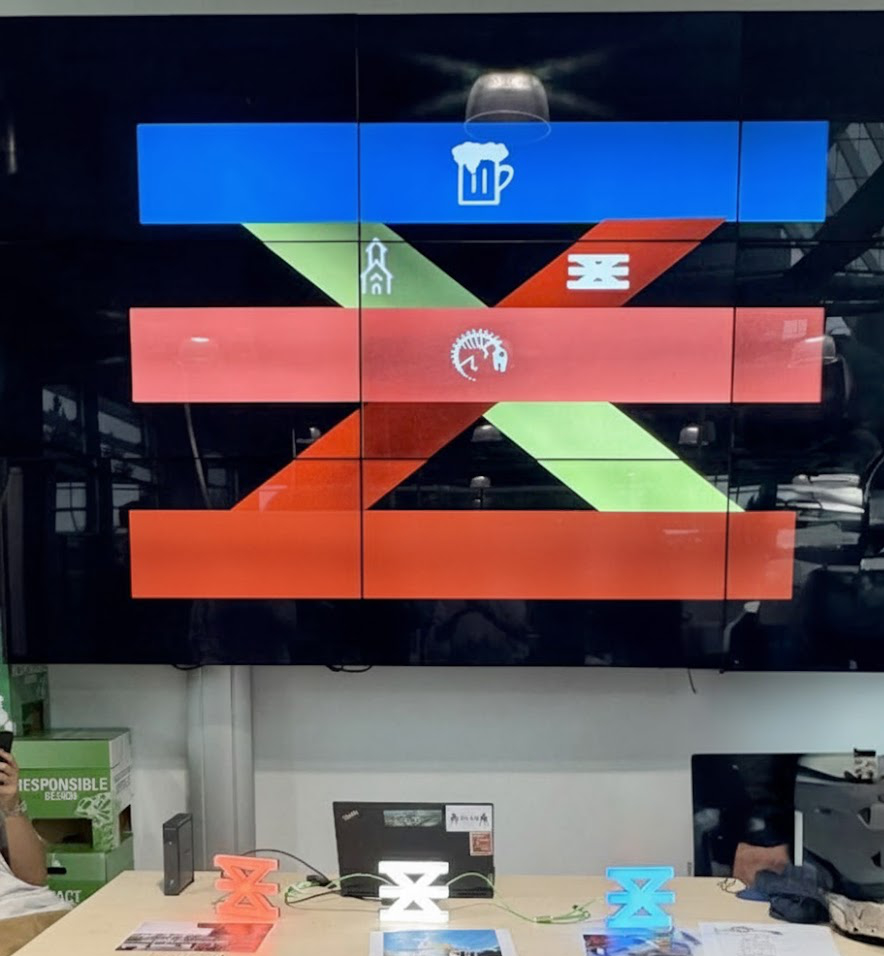

Enschede Promotie approached
Creative Technology students with the intention of transforming
the tourism experience, and aligning its values with its presentation
After a meeting with the client, our team of 6 students created
a IoT game that allowed tourists to explore the
city's landmarks in a technology-forward way.
During this project, I was responsible for user experience design
and user testing. I also facilitated internal brainstorming and storboarding sessions.
Our efforts culminated in what we called waypoints, devices that
tourists would use to "capture" a landmark, and a general map of
the area would show what user had claimed which landmarks.
Problem Definition
After our initial conversation with the client, we discovered that
this project was part of a larger goal to redefine Enschede as
a culturally rich yet innovative and creative environment.
We conducted an internal storyboarding session where the team
highlighted what we thought the problem with the current experience
was.
We discovered that a majority of the team felt friction with
the flow of discovering a city. Most used social media or other
platforms to find activities in foreign cities.
Ideation
The team decided to pursue the creation of a dedicated way of
interacting with a city through technology.
After a brainstorming session, we decided on three ideas that
would be presented to the client. Among them, our final concept:
A capture-the-flag-style game that used what we would later call
waypoints. These waypoints would be placed on landmarks, and when
users approached them, they could use their mobile devices to
interact "claim" that landmark.
Another key feature of the waypoint was that the model would
be scalable. Local businesses would also be marked as
waypoints, and allowed tourists to also discover their businesses,
immersing them into the culture of the city.
Prototype 1
Our first, lo-fi prototype was a set of two pieces. One
was a technical implementation of what the waypoint could
look like. I created the second piece of the concept,
a simulated experience made of paper
In this first instance, testers, depicted as colorful paper
balls, would traverse a map. Each time they reached a
destination, the sign would "light up" in a certain color.
During this the early stages, I made note of users
feedback and emotional states throughout the pretend experience.
which informed the team's design decisions. Specifically, some users
reported lack of motivation to finish the experience, while others
enjoyed the distributed nature of the game.
Prototype 2
After the success of Prototype 1, the team iterated based on user's
and client's feedback, and we created a higher fidelity version
of the project.
This version was now a fully distributed system, capable of
logging different users with their selected colors
To address user feedback from the first prototype, proper goal definition
became a priority for the team. In our second iteration, we tested an
area capture display, which showed in real time the waypoint's color
so that users felt a sense of competition and reward for capturing
chunks of a map.
My responsibility during this period was
to conduct user tests and interviews to determine what needed further
refinement before the final demonstration.
These user tests demonstrated that our iterative work had translated
the first prototype into a fully functional system. Users reported
that the prototype felt easy to use, with the average completion time
or a trial being just under 10 minutes, compared to the benchmark set
by a team member of 8:30 minutes.
In our post-use-evaluation interviews, we found that users created their
own rules. One tester attempted to collect as many waypoints as possible in
the shortest amount of time, Others enjoyed the exploratory aspects of the
game. The game had become accessible and friendlier to any kind of playstyle.
Users also reported that our second iteration felt much more rewarding. By
adding the overview, they felt a sense of progression and desire to
continue playing.
Final Concept

The final concept was demonstrated at a demo market, where we
showcased the complete waypoint system to Enschede Promotie and
other stakeholders. The demonstration validated our approach:
visitors engaged naturally with the game,
exploring the space while competing to claim waypoints.
The waypoint concept achieved its goal of creating a
technology-forward tourism experience that aligned with Enschede's
values of innovation and cultural richness, while providing an
engaging, scalable platform for visitors to discover the city.
Following the successful demonstration, we handed
off the project to Enschede Promotie for implementation in and
around the city.
Reflections
This project marked an important milestone in developing my research
skills. While I had theoretical knowledge of user testing and interview
methodologies, this was my first opportunity to apply
these practices. Looking back, I recognize moments where more
refined approaches would have yielded deeper insights
These early experiences with research and observation shaped how
continuously refine my research in future projects. I think about
UX practices. They instilled in me the commitment to